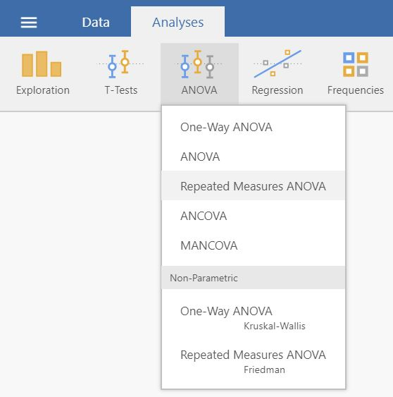
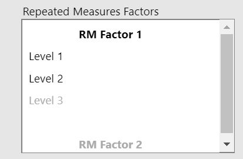
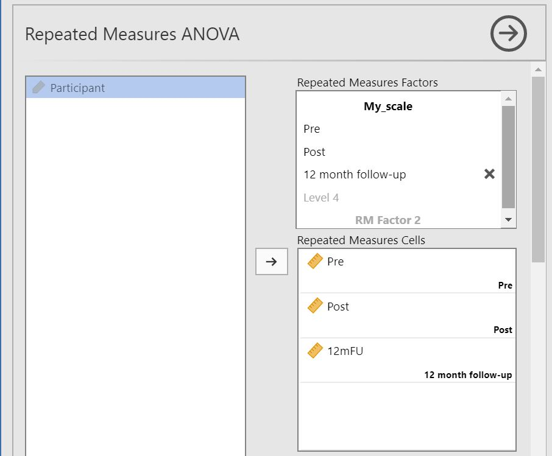
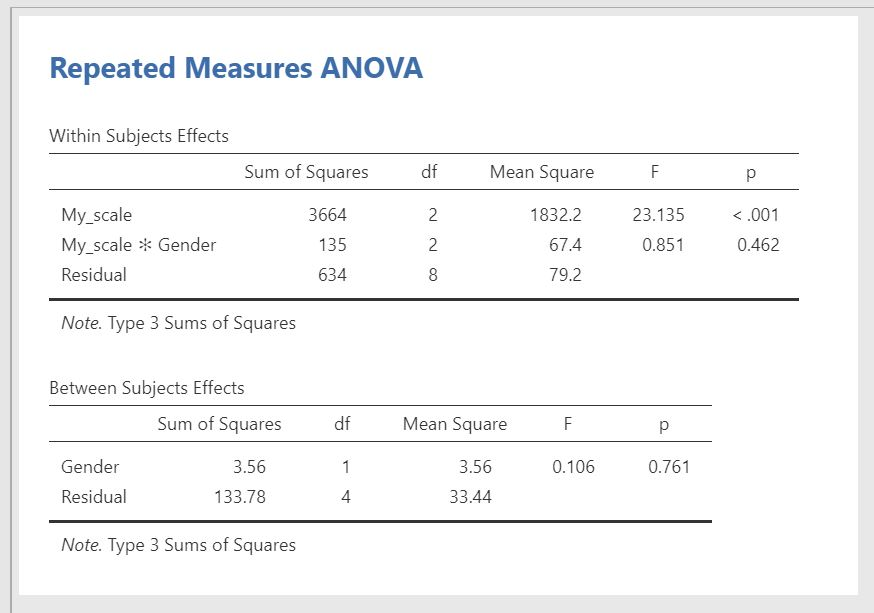

10 ANOVA w schemacie mieszanym
Jak wykonać ANOVA w schemacie mieszanym w jamovi:
Potrzebna jest jedna zmienna grupująca o dwóch poziomach (np. treatment/control) i jedna zmienna ilościowa dla każdego pomiaru. Upewnij się, że poziomy pomiaru są ustawione7 tak, że zmienna grupująca jest oznaczona a zmienna ilościowa jest oznaczona .
Prawidłowe ustawienie powinno wyglądać podobnie do tego:

Wybierz
Analyses->ANOVA->Repeated Measures ANOVA.
W polu Repeated Measures Factors: wpisz nazwę zmiennej zależnej (np. My_scale) i nazwij poziomy dla każdego pomiaru (np. Pre, Post i 12 month follow-up). Poniższe obrazy przedstawiają, jak należy to zrobić.
->
Przeciągnij i upuść zmienne zależne do odpowiednich komórek w Repeated Measures Cells.
Przenieś zmienne grupujące do Between Subject Factors.

Wyniki są wyświetlane w prawym panelu:
